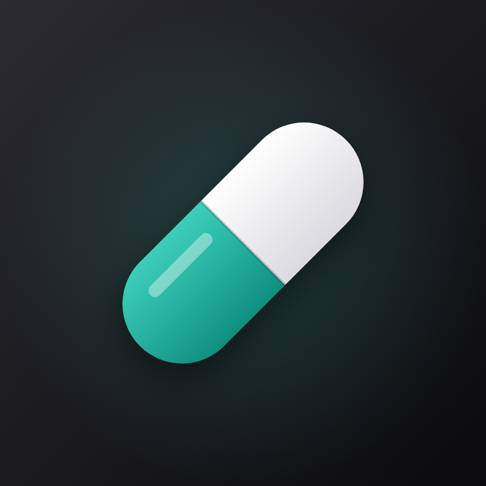

Take a PillPrivacy Policy
Last updated: November 16, 2026 · Türkçe
Free version
No account is needed. Your name (optional), medication names, doses, pill appearance, schedules, stock counts, expiry dates, appointment titles, dates and notes, mealtimes, settings and dose history are stored in a local database on your device and are not sent to us. They are deleted when you delete the app.
Ads (free version only)
The free version shows one banner ad. Ads are served by Google AdMob and are not personalized; on iOS we do not ask for permission to track you across apps (App Tracking Transparency). If you are in the European Economic Area, the UK or Switzerland, Google’s consent form is shown at launch. Google may process technical data such as your IP address and device information to show the ad, limit how often it appears and prevent fraud. Your medication, dose and health information is never shared with the ad provider. Details: How Google uses information from sites or apps that use its services. No ads are shown with Premium or on a patient’s phone linked to a caregiver.
Premium: cloud backup and family care
With Premium, if you sign in with your Apple or Google account, the following is stored on our server:
- Account information: the account ID from Apple or Google and the email address they share (with Apple this may be a private relay address). We do not store passwords.
- Health data: your medications, dose records, appointments, mealtimes and the names you give to the people you care for.
- Subscription status: whether Premium is active and when it ends.
This is health data. Under KVKK (Turkish data protection law) and the GDPR it is processed on the basis of your explicit consent, which the app asks for before the first upload. Data travels between your device and the server over an encrypted connection (HTTPS) and is accessible only to you and the phones you add. The server is dedicated to Take a Pill, managed by us and located in Türkiye; your health data is not transferred abroad, to any other service or to any third party. The server is backed up nightly in encrypted form, and backups are kept for 14 days.
Patient’s phone (caregiver mode)
A family member can link their phone to you by entering the 6-digit code shown on your phone. The patient’s phone does not create an account; it is identified by an anonymous ID. Doses entered and marked on that phone are stored on the server so the linked caregiver can see them. The link can be removed at any time in Settings.
Purchases
Payments are made through the Apple App Store or Google Play; we never see your card details. We use RevenueCat to verify your subscription and make it available on your devices. RevenueCat receives a random app user ID (your account ID if you are signed in) and the purchase information provided by the store, but not your medication or health data.
Deleting your data and your rights
Use Account → Delete account to permanently delete your account, the people you care for and all of your cloud data; this also withdraws your consent. Deleted data drops out of backups within 14 days. Data on your phone stays until you delete the app. Cancel your subscription separately in the App Store or Google Play. Under KVKK and the GDPR you have the right to access, correct, delete and object to the processing of your data; use the contact option below to exercise them.
Home Screen widget
If you add the widget, today’s and tomorrow’s doses are written to a shared area on your device (an iOS App Group) so the widget can read them. Only Take a Pill and its widget can read this area, and the data never leaves your device.
Adherence report
The PDF report is created on your device. It is shared only when you pick an app from the share sheet (for example, email), and only with the people you choose. It is never sent to us.
Pharmacy search
“Find a pharmacy” opens your Maps app with a search for “pharmacy”. Take a Pill does not access your location; if the Maps app has location permission, it uses it under its own policy.
Permissions
- Notifications: To remind you at dose time. Notifications are scheduled locally on your device.
- Alarms (iOS 26 and later): To ring an alarm on the Lock Screen and in the Dynamic Island even when your phone is silent. Optional; without it, reminders arrive as notifications.
Third parties
- Google AdMob: ads in the free version (privacy policy).
- RevenueCat: subscription verification (privacy policy).
- Apple and Google: sign-in, payments and the rate-the-app prompt, subject to their own policies.
These providers may process data outside Türkiye (mainly in the United States); what they receive is limited to the technical and purchase information described above and never includes health data. Your data is never sold and is not shared with anyone other than the parties above.
Children
Take a Pill is not directed at children under 13 and does not knowingly collect data from them. Ads are not personalized.
Medical disclaimer
Take a Pill is a reminder tool. It does not give medical advice and is not intended for diagnosis or treatment. Talk to your doctor or pharmacist about decisions on your medication.
Changes
If this policy changes, the new version will be published on this page and the date above will be updated.
Contact
For questions and data requests, see the support page.